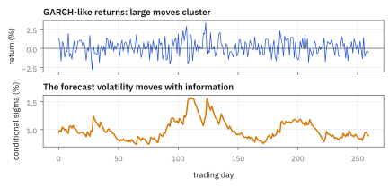
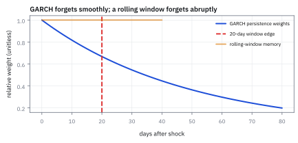
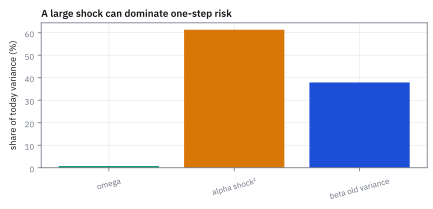
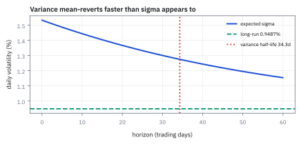
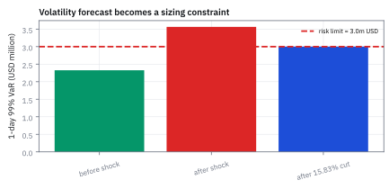

16.4 Autoregressive Conditional Heteroskedasticity (ARCH) and Generalized ARCH (GARCH) Volatility Forecasting
ให้ความเสี่ยงวันนี้เรียนรู้จากแรงกระแทกเมื่อวาน
พอร์ตหุ้น \$100 ล้านใช้ GARCH(1,1) ที่ α = 0.09, β = 0.89 เมื่อวานตลาดร่วง −4% ทั้งที่ model คาดความผันผวนไว้แค่ 1% วันนี้ความผันผวนเป็นเท่าไร และต้องลดพอร์ตกี่ล้านดอลลาร์ให้ 1-day 99% VaR ไม่เกิน 3 ล้าน?
เฉลย: ความผันผวนกระโดดจาก 1.00% เป็น 1.53% ต่อวัน หรือ 24.3% ต่อปี VaR ขึ้นจาก 2.33 เป็น \$3.56 ล้าน ต้องขายทิ้ง \$15.8 ล้านทันที และส่วนเกินของ variance หดครึ่งหนึ่งทุก 34.3 วันทำการ พอร์ตจึงต้องเล็กไปอีกราว 32 วันกว่าจะกลับมาเต็มขนาดได้
ศัพท์ที่ใช้ในหัวข้อนี้
- Autoregressive Conditional Heteroskedasticity (ARCH)
- แบบจำลองที่ variance วันนี้ขึ้นกับ shock กำลังสองในอดีต ใช้จับว่าวันที่เหวี่ยงแรงมักตามด้วยวันที่เหวี่ยงแรง
- Generalized ARCH (GARCH)
- ARCH ที่เพิ่ม variance ของเมื่อวานเข้าไป ใช้ให้ความผันผวนตอบสนองต่อ shock แต่ลืมอย่างราบรื่น และพยากรณ์หลายวันได้
- volatility clustering
- วันที่เหวี่ยงแรงเกาะกลุ่มกัน ช่วงสงบก็ยาวเป็นเดือน ใช้อธิบายว่าทำไมความผันผวนคงที่ใช้ไม่ได้
- conditional variance
- variance ที่คำนวณโดยมีข้อมูลถึงเมื่อวานเป็นเงื่อนไข ใช้กำหนดว่าวันนี้ควรถือความเสี่ยงได้เท่าไร
- persistence
- α + β ใน GARCH(1,1) คือสัดส่วนของความแรงเมื่อวานที่ยกยอดมาถึงวันนี้ ใช้หา half-life ของ shock
- half-life
- เวลาที่ส่วนเกินของ variance เหนือค่าระยะยาวหดเหลือครึ่งหนึ่ง ใช้บอกว่าต้องคุมพอร์ตเล็กไปนานแค่ไหน
- Value at Risk (VaR)
- ขาดทุนหนึ่งวันที่ model คาดว่าจะเกินได้แค่ 1% ของวัน ใช้เป็นเพดานความเสี่ยงของโต๊ะเทรด
- rolling window
- การประมาณความผันผวนจาก 20 วันล่าสุดด้วยน้ำหนักเท่ากัน ใช้เป็นตัวเปรียบเทียบที่ลืมข่าวแบบกระโดด
- leverage effect
- วันที่ติดลบมักดัน equity volatility มากกว่าวันบวกขนาดเท่ากัน ใช้เตือนว่า symmetric GARCH อาจพลาด downside risk
- fat tails
- หางของ return distribution หนากว่า normal ทำให้เหตุการณ์สุดโต่งเกิดบ่อยกว่า ใช้เลือก Student-t innovations และ stress test
- kurtosis
- ค่าที่วัดความหนาของหาง Normal มีค่า 3 ใช้ตรวจว่าเหตุการณ์สุดโต่งเกิดบ่อยกว่า Normal แค่ไหน
- Student-t
- distribution ที่หางหนากว่า Normal ใช้แทน z_t เมื่อ GARCH กับ Normal ยังให้หางบางเกินไป
- Integrated GARCH (IGARCH)
- GARCH ที่ α + β = 1 ไม่มีค่าระยะยาวให้กลับ ใช้เป็นสัญญาณเตือนว่าข้อมูลอาจคร่อมการเปลี่ยนระบอบ
- Markov-switching GARCH
- GARCH ที่สลับชุด parameter ตามระบอบของตลาด ใช้เมื่อข้อมูลคร่อมหลายระบอบ
- exponential GARCH (EGARCH)
- GARCH ที่รองรับผลกระทบไม่สมมาตรของข่าวบวกและลบ ใช้เมื่อ symmetric GARCH ไม่พอ
- Glosten–Jagannathan–Runkle GARCH (GJR)
- GARCH ที่เพิ่มตัวบ่งชี้ downside shock ใช้ model leverage effect
สัญลักษณ์ที่ใช้ในหัวข้อนี้
| สัญลักษณ์ | ความหมาย | หน่วย |
|---|---|---|
| $r_t$ | ผลตอบแทนรายวันของดัชนีหุ้น วัน t | decimal ต่อวัน |
| $\epsilon_t=r_t-\mu$ | shock หลังหักค่าเฉลี่ย โจทย์ถือ μ ≈ 0 | decimal ต่อวัน |
| $z_t$ | ก้อนสุ่มมาตรฐาน mean 0 variance 1 | unitless |
| $\sigma_t^2,\ \sigma_t$ | variance และความผันผวนที่พยากรณ์ไว้สำหรับวัน t | decimal² และ decimal ต่อวัน |
| $\omega$ | พื้นของ variance ที่เติมเข้าไปทุกวัน | decimal² |
| $\alpha$ | น้ำหนักที่ให้กับข่าวเมื่อวาน ตัวที่ทำให้ variance กระโดดทันทีหลังวันแรง | unitless |
| $\beta$ | น้ำหนักที่ให้กับ variance ของเมื่อวาน ตัวที่ทำให้ความปั่นป่วนอยู่ยาว | unitless |
| $V,\ \sigma_\infty$ | variance และความผันผวนระยะยาวที่ model กลับไปหา | decimal² และ decimal ต่อวัน |
| $f_h$ | variance ที่พยากรณ์ไว้ h วันหลังวันนี้ | decimal² |
| $A,\ L$ | มูลค่าพอร์ต และเพดาน VaR ของโต๊ะ | USD |
| $h$ | ระยะพยากรณ์ | วันทำการ |
ที่มาที่ไป: ความผันผวนที่ไม่ยอมอยู่นิ่ง
ทุกแบบจำลองก่อนหน้านี้สมมติว่าความผันผวนคงที่ ซึ่งใครที่เคยดูตลาดจริงจะรู้ทันทีว่าไม่จริง วันที่เหวี่ยงแรงมักตามด้วยวันที่เหวี่ยงแรง และช่วงสงบก็ยาวเป็นเดือน หัวข้อ 16.1 วัดได้ว่าความผันผวนมี autocorrelation 0.284 ที่ lag 1 ทั้งที่ทิศทางแทบไม่มี
Robert Engle เสนอวิธีจับพฤติกรรมนี้ในปี 1982 โดยให้ความผันผวนวันนี้ขึ้นกับขนาดของแรงกระแทกเมื่อวาน
Tim Bollerslev ขยายต่อในปี 1986 โดยเพิ่มความจำของความผันผวนเองเข้าไปด้วย ซึ่งทำให้แบบจำลองใช้ parameter น้อยลงมากแต่อธิบายข้อมูลได้ดีกว่า
Engle ได้รางวัลโนเบลในปี 2003 และรุ่นที่ Bollerslev ขยายกลายเป็นมาตรฐานที่ใช้กันทั่วอุตสาหกรรม สำหรับพยากรณ์ความเสี่ยงรายวัน
โจทย์: วันหลังตลาดร่วง −4%
พอร์ตหุ้น \$100 ล้าน ใช้ GARCH(1,1) ที่ ω = 1.8 × 10⁻⁶, α = 0.09, β = 0.89 เมื่อวานตลาดร่วง −4% ขณะที่ model พยากรณ์ความผันผวนของเมื่อวานไว้แค่ 1.0% ถือว่าค่าเฉลี่ยรายวันเป็นศูนย์ shock จึงเท่ากับผลตอบแทน โต๊ะมีเพดาน 1-day 99% VaR \$3 ล้าน
ต้องหาสี่อย่าง persistence กับความผันผวนระยะยาว half-life ของ shock ความผันผวนวันนี้กับอีกสองวันข้างหน้า และต้องลดพอร์ตกี่ % ทุกตัวเลขใช้หน่วยสัดส่วน ไม่ใช่ % ดังนั้น −4% คือ −0.04 กำลังสองได้ 0.0016 และ 1% คือ 0.01 กำลังสองได้ 0.0001
ขั้นที่ 1 — นิยามของ GARCH(1,1): สามก้อนที่มีหน้าที่ต่างกัน
สมการนี้เป็นนิยามของแบบจำลองที่เราเลือกเขียน ไม่ใช่ผลที่พิสูจน์ ผลตอบแทนคือค่าเฉลี่ยบวก shock และ shock คือความผันผวนของวันนั้นคูณก้อนสุ่มมาตรฐาน ส่วน variance ของวันนี้สร้างจากสามก้อน
ก้อนแรก $\omega$ คือพื้นที่ variance ไม่มีวันต่ำกว่า ก้อนที่สอง $\alpha\epsilon_{t-1}^2$ ตอบสนองต่อขนาดข่าวที่เกิดจริงเมื่อวาน ก้อนที่สาม $\beta\sigma_{t-1}^2$ สืบทอดคำพยากรณ์ของเมื่อวาน ซึ่งเป็นตัวสร้างความจำยาว
สมการเป็นเรื่องของ variance ไม่ใช่ความผันผวนและ shock เข้าสมการในรูปกำลังสอง ข่าวร้าย −4% กับข่าวดี +4% จึงดัน variance ขึ้นเท่ากัน ซึ่งเป็นจุดอ่อนที่จะกลับมาในกับดักท้ายหัวข้อ
แล้วเอาไปใช้ทำอะไรได้จริงบ้าง
การให้ความผันผวนเรียนรู้จากแรงกระแทกเมื่อวาน ทำให้พยากรณ์ความเสี่ยงได้ดีขึ้นมาก
ใช้พยากรณ์ความเสี่ยงของพรุ่งนี้ ซึ่งเป็น input ของการคำนวณ Value at Risk รายวัน
ใช้ปรับขนาดสถานะตามความเสี่ยงที่คาดว่าจะเจอ ซึ่งเป็นกฎที่กองทุนจำนวนมากใช้จริง
ใช้อธิบายว่าทำไมผลตอบแทนรายปีถึงมีหางอ้วน ทั้งที่แต่ละวันดูเหมือนระฆังคว่ำ
Figure 16.4a — ผลตอบแทนจำลองจาก GARCH(1,1): วันแรงเกาะกลุ่มกัน

ข้อมูลสังเคราะห์ด้วย parameter ของโจทย์ แผงบนคือผลตอบแทนที่มีเครื่องหมาย แผงล่างคือความผันผวนที่ model พยากรณ์ ซึ่งพุ่งตามหลังวันแรงแล้วค่อย ๆ ลดลง แยกสองแผงเพื่อให้เห็นว่า GARCH พยากรณ์ความผันผวน ไม่ได้พยากรณ์ทิศ
ขั้นที่ 2 — เงื่อนไขที่ทำให้ variance เป็นบวกและไม่ระเบิด
variance ติดลบไม่ได้ และต้องไม่โตไม่หยุด สองข้อนี้บังคับค่าที่ใส่ได้ ตรวจกับตัวเลขของโจทย์ทีละข้อ
สองข้อแรกทำให้ทุกก้อนเป็นบวก variance จึงติดลบไม่ได้ ข้อสาม α + β คือสัดส่วนของความแรงเมื่อวานที่ยกยอดมาถึงวันนี้ เพราะทั้ง shock กำลังสองและ variance ของเมื่อวานต่างเป็นตัวแทนของความแรงเมื่อวาน ที่ 0.98 แปลว่าลืมไปแค่ 2% ต่อวัน
ถ้า α + β ≥ 1 ไม่มีค่าระยะยาวให้กลับ shock ไม่มีวันหาย แบบจำลองนี้เรียก IGARCH เหตุผลเดียวกับที่ autoregressive model (AR) แบบ AR(1) ต้องมี |φ| < 1 ในหัวข้อ 16.2
ขั้นที่ 3 — คลี่สมการออก: GARCH คือค่าเฉลี่ยถ่วงน้ำหนักของข่าวทุกวัน
สมการของขั้นที่ 1 กดเครื่องคิดเลขได้ แต่ไม่บอกว่ามันเชื่ออะไร วิธีให้มันเปิดปากคือแทนตัวมันเองลงไปในตัวเอง แล้วดูว่าอะไรโผล่ออกมา
แทนรอบเดียวก็เห็นรูป variance เมื่อวานหายไป แทนที่ด้วย shock กำลังสองของเมื่อวานซืนคูณ β ทำซ้ำไปเรื่อย ๆ ทุกวันในอดีตโผล่มาครบ ส่วน ω สะสมเป็น ω/(1 − β) แบบเดียวกับ c/(1 − φ) ในหัวข้อ 16.2
GARCH ไม่ได้ดูแค่เมื่อวาน มันดูทุกวันที่ผ่านมา แต่น้ำหนักลดลงวันละ 11% ข่าวเมื่อวานได้ 0.09 ข่าวเมื่อสี่วันก่อนเหลือ 0.0634 และน้ำหนักหดครึ่งทุก 5.95 วัน ไม่มีวันไหนหลุดจากหน้าต่างทันทีแบบ rolling window
ระวังสองตัวเลขที่ต่างกัน β = 0.89 คืออัตราที่ข่าวเก่าจางในค่าประมาณวันนี้ ส่วน α + β = 0.98 คืออัตราที่คำพยากรณ์ variance กลับหาระดับปกติในขั้นที่ 6 ซึ่งช้ากว่า เพราะวันข้างหน้าก็คาดว่าจะมีข่าวแรงตามมาอีก
Figure 16.4b — น้ำหนักของข่าวเก่า: GARCH กับ rolling window

เส้นน้ำเงินคือน้ำหนัก 0.09 × 0.89^k ที่ GARCH ให้กับผลตอบแทนกำลังสองเมื่อ k วันก่อน ลดลงเรียบ ๆ และหดครึ่งทุก 5.95 วัน เส้นส้มคือ rolling window 20 วัน ให้น้ำหนัก 1/20 เท่ากันทุกวัน แล้วตัดเป็นศูนย์ทันทีในวันที่ 21
ขั้นที่ 4 — long-run variance และ volatility
ถ้าปล่อยไว้นาน ๆ variance จะนิ่งที่ค่าหนึ่ง ใช้กลวิธีเดียวกับหัวข้อ 16.2 คือตั้งให้ของสองเวลาเท่ากัน แล้วแทนตัวเลขของโจทย์จนได้ความผันผวนรายปี
บรรทัดแรกใช้สองข้อจากนิยาม shock คือความผันผวนคูณก้อนมาตรฐาน และก้อนมาตรฐานมีค่าเฉลี่ยของกำลังสองเท่ากับหนึ่ง แยกค่าเฉลี่ยของผลคูณได้ เพราะ σ ของวันนี้ถูกกำหนดจากอดีตแล้ว ส่วน z เป็นของใหม่ที่เป็นอิสระ
บังคับให้ค่าเฉลี่ยของสองวันเท่ากัน ย้ายข้าง แล้วหาร ตัวส่วน 1 − 0.98 = 0.02 ขยาย ω ขึ้น 50 เท่า ω = 1.8 × 10⁻⁶ จึงไม่ใช่ variance ระยะยาว แบบเดียวกับที่ c ไม่ใช่ค่าเฉลี่ยในหัวข้อ 16.2
ถอดรากก่อนได้ 0.9487% ต่อวัน แล้วคูณ √252 จาก 252 วันเทรดต่อปี ได้ 15.06% ต่อปี จะคูณ 252 เข้าไปใน variance ก่อนแล้วถอดรากก็ได้เท่ากัน ที่ผิดคือคูณ 252 เข้าไปใน σ ตรง ๆ ได้ 239% เพราะ variance บวกกันตามเวลา ส่วน σ โตตามรากของเวลา
ขั้นที่ 5 — variance ของวันนี้หลังวันร่วง
ใส่ shock ที่เกิดจริงเมื่อวานเข้าสมการของขั้นที่ 1 ทีละก้อน แล้วดูว่าก้อนไหนคุมเกม
ก้อนของ shock ได้ 0.000144 จากทั้งหมด 0.0002348 คือ 61.3% ก้อนความจำได้ 37.9% และพื้น ω แค่ 0.8% ข่าวเมื่อวานจึงครองคำพยากรณ์วันนี้
ความผันผวนกระโดดจาก 1.00% เป็น 1.53% ต่อวัน เพิ่ม 53.2% ทำไมแค่นั้น ทั้งที่ shock ใหญ่กว่าที่คาดไว้ 4 เท่า เพราะ α = 0.09 แบบจำลองให้น้ำหนักข่าววันเดียวแค่ 9% อีก 89% ยังยึดคำพยากรณ์เดิม ตอบสนองแต่ไม่ตื่นตระหนก
เทียบกับ rolling window 20 วันด้วยตัวเลข
สมมติ 19 วันก่อนหน้าแกว่งวันละ 1% พอดี shock กำลังสองวันละ 0.0001 เพิ่มวัน −4% เข้าไป ค่าเฉลี่ย 20 วันคือ (19 × 0.0001 + 0.0016)/20 = 0.0035/20 = 0.000175 ได้ σ = 1.323% ถ้าวันต่อ ๆ ไปแกว่ง 1% ตัวเลขนี้จะค้างที่ 1.323% ไปอีก 19 วัน แล้วตกลงเหลือ 1.000% ทันทีในวันที่ 21 เมื่อวัน −4% หลุดหน้าต่าง
GARCH ขึ้นไป 1.532% ทันที เพราะให้น้ำหนักข่าวใหม่ 0.09 มากกว่า 1/20 = 0.05 แล้วค่อย ๆ ลดลงตามรูป 16.4b การกระโดดลงในวันที่ 21 ของ rolling window เป็นของปลอมที่ไม่มีเหตุผลทางเศรษฐกิจเลย ความเสี่ยงไม่ได้หายไปเพียงเพราะปฏิทินเดินผ่าน
Figure 16.4c — สัดส่วนของสามก้อนใน variance วันนี้

ในวันหลังตลาดร่วง 4% ก้อนของ shock ครอง 61.3% ของ variance ที่พยากรณ์ ก้อนความจำ 37.9% และ ω ต่ำกว่า 1% ความผันผวนจึงตอบสนองเร็ว โดยยังมีระดับระยะยาวคอยดึงไว้
ขั้นที่ 6 — พยากรณ์หลายวันข้างหน้า และ half-life
พรุ่งนี้ต้องใช้ shock ของวันนี้ ซึ่งยังไม่เกิด แทนด้วยค่าเฉลี่ยของมัน แล้วเดินสมการต่อ α กับ β จะยุบรวมเป็นตัวเดียว ตัวเลขใช้หน่วย 10⁻⁶ ให้อ่านง่าย variance 0.0002348 จึงเขียนเป็น 234.8
พรุ่งนี้ต้องใช้ shock ของวันนี้ซึ่งยังไม่จบ เราไม่รู้ว่าจะขึ้นหรือลง แต่รู้ว่าขนาดกำลังสองโดยเฉลี่ยคือ variance ที่พยากรณ์ไว้ เพราะ ε = σz และ z² มีค่าเฉลี่ย 1 แทนเข้าไป α กับ β จึงยุบรวมเป็น 0.98
เดินสองก้าวได้ 1.5228% และ 1.5135% ลดวันละราว 0.01 จุดเท่านั้น ลบสมการจุดสมดุล V = ω + 0.98V ออก ได้ส่วนเกินที่หด 2% ต่อวัน ส่วนเกินวันนี้ 0.0001448 จึงหดครึ่งหนึ่งใน 34.3 วันทำการ สูตรเดียวกับ half-life ของ AR(1) ในหัวข้อ 16.2
ผลข้างเคียงที่สำคัญ พอ α กับ β ยุบรวมกัน การพยากรณ์ล่วงหน้าแยกไม่ออกระหว่าง α = 0.09, β = 0.89 กับ α = 0.20, β = 0.78 ทั้งคู่ให้ 0.98 เท่ากัน ต่างกันแค่ปฏิกิริยาต่อ shock วันแรก
เส้นทางกลับสู่ปกติจากสูตรปิด
| h (วัน) | 0.98^h | f_h | √f_h ต่อวัน |
|---|---|---|---|
| 1 | 0.9800 | 0.00023190 | 1.523% |
| 2 | 0.9604 | 0.00022907 | 1.513% |
| 5 | 0.9039 | 0.00022089 | 1.486% |
| 20 | 0.6676 | 0.00018667 | 1.366% |
| 60 | 0.2976 | 0.00013309 | 1.154% |
| ไกลมาก | 0 | 0.00009000 | 0.949% |
ทุกแถวคือ $f_h=0.00009+0.98^h(0.0001448)$ ผ่านไป 60 วัน ความผันผวนยังอยู่ที่ 1.154% สูงกว่าระดับปกติ 0.949% อยู่ 21% กว่าส่วนเกินจะเหลือ 1/8 ต้องใช้ 3 เท่าของ half-life ราว 103 วัน หรือ 5 เดือน เพดานความเสี่ยงจึงต้องปรับทั้งไตรมาส ไม่ใช่ปรับวันเดียวแล้วกลับ
ทำไม σ ลดช้ากว่าที่ 0.98 ทำให้รู้สึก
0.98 ทำงานกับ variance ไม่ใช่ σ ที่ h = 20 variance หดไปแล้ว 20.5% จาก 0.0002348 เหลือ 0.00018667 แต่ σ หดแค่ 10.8% จาก 1.532% เหลือ 1.366% การถอดรากทำให้การเปลี่ยนแปลงเล็ก ๆ ดูอ่อนลงราวครึ่งหนึ่ง
ถ้าถามว่าส่วนเกินของ σ เหนือ 0.949% หดครึ่งเมื่อไร คือ σ ลงถึง 1.2405% ซึ่ง variance เท่ากับ 0.00015388 ส่วนเกินของ variance เหลือ 44.1% ใช้เวลา 40.5 วัน ช้ากว่า 34.3 วันของ variance ความรู้สึกว่าความปั่นป่วนอยู่นานจึงไม่ใช่ภาพลวง
Figure 16.4d — ความผันผวนที่พยากรณ์ไปถึง 60 วัน

เส้นสีน้ำเงินคือรากของ variance ที่พยากรณ์ เริ่มที่ 1.532% หลัง shock ผ่าน 1.366% ที่วันที่ 20 และยังเหลือ 1.154% ที่วันที่ 60 เส้นประคือค่าระยะยาว 0.9487% เส้นจุดคือ half-life ของ variance ที่ 34.3 วัน
VaR ในตัวอย่างนี้หมายถึงอะไร
VaR ระดับ 99% ในตัวอย่างนี้คือขาดทุนหนึ่งวันที่ model คาดว่าจะเกินได้เพียง 1% ของวัน ไม่ใช่เพดานขาดทุน หัวข้อ 17.1 จะนิยาม VaR และ Expected Shortfall ให้ครบ รวมทั้งข้อจำกัดของสมมติฐาน Normal
ขั้นที่ 7 — แปลงความผันผวนเป็น VaR และขนาดพอร์ต
ตัวเลขความผันผวนยังใช้ตัดสินใจไม่ได้ ต้องแปลงเป็นความเสี่ยงเป็นเงิน แล้วเป็นกฎขนาดพอร์ต
คูณมูลค่าพอร์ต ความผันผวนที่พยากรณ์ของวันนี้ และ quantile ของ Normal ได้ VaR เป็นขาดทุนหน่วย USD ทำไม 2.326 เพราะ Φ(2.326) = 0.99 ตามหัวข้อ 1.9 คือหางซ้าย 1% ของระฆังคว่ำ
VaR เป็นเส้นตรงใน σ จึงเพิ่ม 1.532 เท่า เท่ากับอัตราส่วน σ พอดี 3.564 ล้านเกินเพดาน 3 ล้านไป 19% ย้อนกลับได้พอร์ตที่รับได้ 84.17 ล้าน ต้องขายทิ้ง 15.83 ล้าน หรือคิดอีกทาง พอร์ตเดิมรับ σ ได้สูงสุด 1.290%
ตัวเลข 15.8% ไม่ได้มาจากความกลัว แต่มาจากโซ่ที่ตรวจย้อนได้ทุกข้อ shock −4% ให้ variance 0.0002348 ให้ σ 1.53% ให้ VaR 3.56 ล้าน เกินเพดาน 3 ล้าน จึงลด 15.8%
คำตอบ — หลังวันร่วง −4% ต้องทำอะไร
คำถาม: หลังตลาดร่วง −4% ความผันผวนวันนี้เป็นเท่าไร อยู่นานแค่ไหน และต้องลดพอร์ต \$100 ล้านลงเท่าไรให้ VaR ไม่เกิน 3 ล้าน?
ของที่มี: ขั้นที่ 2 ถึง 7
1. persistence 0.09 + 0.89 = 0.98 variance ระยะยาว 9.0 × 10⁻⁵ ความผันผวนระยะยาว 0.949% ต่อวัน หรือ 15.06% ต่อปี
2. half-life ของส่วนเกิน variance = ln 0.5/ln 0.98 = 34.3 วันทำการ
3 ความผันผวนวันนี้ 1.532% ต่อวัน หรือ 24.33% ต่อปี พรุ่งนี้ 1.523% และมะรืน 1.513%
4. VaR 99% ขึ้นจาก 2.33 เป็น \$3.56 ล้าน เกินเพดาน 3 ล้าน ต้องลดพอร์ต 15.8% หรือขาย \$15.8 ล้าน
ตรวจเองใน 10 วินาที: 84.17 ล้าน × 2.326 × 0.015323 = 3.00 ล้าน และ 100 − 84.17 = 15.83 ล้าน
แปลว่าอะไร: GARCH เปลี่ยนคำถามว่าตลาดน่ากลัวขึ้นไหม ให้เป็นตัวเลขที่ตั้งกฎได้ ของที่มีค่าที่สุดคือเส้นทางกลับสู่ปกติ พอร์ตเต็ม 100 ล้านรับ σ ได้ถึง 1.290% ซึ่งสูตรปิดบอกว่าจะถึงในราว 32 วันทำการ แต่ถ้าทุกโต๊ะในตลาดใช้ GARCH เหมือนกัน ทุกคนจะขายพร้อมกันหลังวันร่วง ตลาดร่วงอีก σ สูงขึ้นอีก เป็นวงจรที่ความผันผวนป้อนตัวเองและขยายวิกฤต
Figure 16.4e — VaR เกินเพดาน และการลดพอร์ต

แท่งแรกคือ VaR ก่อน shock 2.326 ล้าน แท่งสองคือหลัง shock 3.564 ล้าน เส้นแดงคือเพดาน \$3.0 ล้าน แท่งสุดท้ายคือ VaR หลังลดพอร์ต 15.83% ให้พอดีเพดาน กฎนี้ตรวจซ้ำได้ แต่ยังไม่ได้คิดสภาพคล่องหรือ stress loss
ขั้นที่ 8 — GARCH สร้างหางอ้วนขึ้นมาเอง
z_t เป็น Normal แท้ ๆ ทุกวัน แต่ผลตอบแทนที่มองรวมทั้งปีไม่ใช่ เพราะมันคือส่วนผสมของ Normal หลายตัวที่กว้างไม่เท่ากัน ลองตัวอย่างเล็กก่อน แล้วค่อยใช้สูตร kurtosis ของ GARCH(1,1) ที่ Bollerslev พิสูจน์ไว้
ลองด้วยมือก่อน ครึ่งหนึ่งของวันมี σ = 1 อีกครึ่งมี σ = 2 variance รวมคือ 2.5 moment ที่สี่ของ Normal คือ 3σ⁴ จึงได้ 25.5 kurtosis 4.08 มากกว่า 3 ทั้งที่แต่ละวันเป็นระฆังคว่ำแท้ ๆ
GARCH ทำแบบเดียวกันแต่ σ เปลี่ยนต่อเนื่อง สูตรต้องการเงื่อนไข c₄ < 1 ซึ่งผ่าน แทนเลขได้ kurtosis 5.08 หรือ excess kurtosis 2.08 หางอ้วนกว่า Normal ชัดเจน โดยไม่ได้ใส่หางอ้วนเข้าไปเลย เรื่องเดียวกับ Law of Total Variance ในหัวข้อ 2.2
ตรวจกับของจริง วัน −4% ที่ σ = 1% คือเหตุการณ์ −4σ ถ้า Normal ล้วนจะเกิดครั้งเดียวใน 31,600 วัน หรือ 125 ปี ขัดกับประสบการณ์ชัดเจน แต่ข้อมูลจริงมักมี excess kurtosis 4 ถึง 8 มากกว่า 2.08 งานจริงจึงใช้ z_t แบบ Student-t แทน Normal
กับดัก: α + β ที่ชน 1 หน่วยที่ผิด และข่าวร้ายที่ไม่เท่าข่าวดี
ถ้าประมาณแล้วได้ α + β ≥ 0.999 อย่าเพิ่งดีใจว่าความจำยาว มันมักแปลว่าข้อมูลคร่อมการเปลี่ยนระบอบที่ไม่ได้ใส่ในแบบจำลอง เช่นวิกฤตปี 2008 หรือปี 2020 แบบจำลองอธิบายการกระโดดของระดับ σ ไม่ได้ จึงอธิบายด้วยความจำที่สูงลิ่วแทน V = ω/(1 − α − β) ระเบิดหรือติดลบ และการพยากรณ์ระยะยาวใช้ไม่ได้ทั้งหมด ทางแก้คือใส่ตัวแปรหุ่นช่วงวิกฤต ใช้ Markov-switching GARCH หรือประมาณแยกช่วง
กับดักหน่วย ถ้าเผลอใส่ −4 แทน −0.04 shock กำลังสองจะเป็น 16 แทน 0.0016 ผลเพี้ยน 10,000 เท่า และ GARCH ปกติให้ข่าวดีกับข่าวร้ายขนาดเท่ากันดัน σ เท่ากัน ซึ่งผิดสำหรับหุ้น วันลบดัน σ แรงกว่าวันบวกขนาดเดียวกันราวสองเท่า งานจริงบนหุ้นจึงควรใช้ GJR หรือ EGARCH
ข้อจำกัด: วิธีนี้สมมติอะไร และของจริงเป็นอย่างไร
| เรื่อง | วิธีนี้สมมติว่า | ของจริงเป็นอย่างไร | ผลที่ตามมาเวลาใช้งาน |
|---|---|---|---|
| ทิศของแรงกระแทก | ข่าวดีกับข่าวร้ายมีผลเท่ากัน | ข่าวร้ายดันความผันผวนแรงกว่ามาก | พยากรณ์ต่ำเกินไปหลังตลาดร่วง ซึ่งเป็นตอนที่ต้องการความแม่นที่สุด |
| ความเร็วในการปรับ | ปรับตัวด้วยความเร็วคงที่ | ตลาดเปลี่ยนภาวะแบบกระโดด | แบบจำลองตามไม่ทันในช่วงเปลี่ยนภาวะ |
| ข้อมูลรายวัน | ใช้ราคาปิดรายวันพอ | ความผันผวนระหว่างวันมีข้อมูลมากกว่า | การใช้ข้อมูลความถี่สูงให้พยากรณ์ที่ดีกว่าอย่างชัดเจน |
แถวแรกเป็นเหตุผลที่รุ่นขยายของแบบจำลองนี้แยกผลของข่าวดีกับข่าวร้ายออกจากกัน
ตรวจทุกตัวเลขของโจทย์ GARCH
import numpy as np
from math import erf, sqrt
omega,alpha,beta=1.8e-6,.09,.89
eps,sigprev,A,L,z=-.04,.01,100_000_000,3_000_000,2.326
p=alpha+beta
V=omega/(1-p)
assert abs(p-.98)<1e-12 and abs(V-9e-5)<1e-15
assert abs(np.sqrt(V)-.009487)<1e-6 and abs(np.sqrt(252*V)-.1506)<1e-4
assert abs(np.log(.5)/np.log(beta)-5.95)<.01 # weight of an old shock halves
v=omega+alpha*eps**2+beta*sigprev**2
assert abs(v-.0002348)<1e-12 and abs(np.sqrt(v)-.015323)<1e-6
assert abs(alpha*eps**2/v-.613)<1e-3 # yesterday's shock dominates
assert abs(np.sqrt((19*1e-4+eps**2)/20)-.013229)<1e-6 # 20-day rolling window
f=[v]
for h in range(200):
f.append(omega+p*f[-1]) # walk the forecast forward
assert all(abs(f[h]-(V+p**h*(v-V)))<1e-15 for h in range(201)) # closed form agrees
assert np.allclose(np.sqrt([f[1],f[2],f[20],f[60]]),[.015228,.015135,.013663,.011536],atol=1e-6)
assert abs(np.log(.5)/np.log(p)-34.31)<.01
sig=np.sqrt(f)
assert np.argmax(sig-np.sqrt(V)<=(sig[0]-np.sqrt(V))/2)==41 # sigma's excess halves on day 41
var=z*np.sqrt(v)*A
Amax=L/(z*np.sqrt(v))
assert abs(var-3_564_173)<1 and abs(1-Amax/A-.1583)<1e-4
assert abs(L/(z*A)-.01290)<1e-5 and np.argmax(sig<=L/(z*A))==32
K=3*(1-p**2)/(1-p**2-2*alpha**2)
assert 3*alpha**2+2*alpha*beta+beta**2<1 and abs(K-5.077)<1e-3
assert abs((.5*3+.5*3*16)/2.5**2-4.08)<1e-12 # the two-sigma mixture
pz=.5*(1+erf(-4/sqrt(2)))
assert abs(pz-3.17e-5)<1e-7 and abs(1/pz/252-125)<1โค้ดเดินคำพยากรณ์ 200 วันเทียบกับสูตรปิด แล้วตรวจ 15.06% ต่อปี 1.5323% วันนี้ 34.3 วัน VaR \$3,564,173 ลด 15.83% วันที่ 32 ที่กลับมาเต็มขนาด kurtosis 5.08 และ 125 ปีของเหตุการณ์ −4σ งานจริงต้อง backtest VaR และตรวจ autocorrelation function (ACF) ของ standardized residual คือ shock เทียบกับ σ ของวันนั้น
ก่อนไปต่อ — บทความเสี่ยง
GARCH ให้ความผันผวนที่เปลี่ยนตามข้อมูล และเส้นทางกลับสู่ปกติ แต่ VaR ยังเป็นเพียง quantile ภายใต้สมมติฐานเรื่อง distribution ระยะเวลา และสภาพคล่องที่ระบุ หัวข้อถัดไปเรื่องการวัดความเสี่ยงจะเติม Expected Shortfall, backtest และการตัดสินใจขนาดสถานะที่ไม่พึ่งเลขเดียว
สรุปที่ใช้ได้จริง
- GARCH(1,1) แยกสามก้อน พื้น ω ปฏิกิริยาต่อข่าว α และความจำ β ใช้ได้เมื่อ ω > 0, α, β ≥ 0 และ α + β < 1
- คลี่สมการแล้ว variance วันนี้คือค่าเฉลี่ยถ่วงน้ำหนักของข่าวทุกวันในอดีต น้ำหนักจางวันละ 11% ไม่หลุดหน้าต่างแบบ rolling window
- คำนวณในหน่วยสัดส่วนกำลังสองก่อน แล้วถอดรากและคูณ √252 ระดับปกติของโจทย์คือ 0.949% ต่อวัน หรือ 15.06% ต่อปี
- หลังวันร่วง −4% σ กระโดดเป็น 1.53% ส่วนเกินของ variance หดครึ่งทุก 34.3 วัน และ VaR 3.56 ล้านบังคับให้ลดพอร์ต 15.8%
- GARCH กับ Normal ให้ kurtosis 5.08 เอง แต่ยังพลาด leverage effect การเปลี่ยนระบอบ และแรงขายพร้อมกันของทุกโต๊ะ